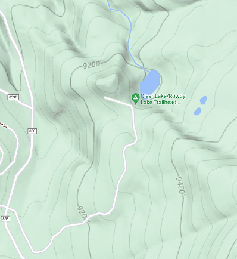

|  | Rowdy Lake |
To get to this lake is quite easy. Smiply take Highway 50 to Cimarron Road/ Silverjack Reservoir heading south.
Which is just after the Pleasent Valley Country Store. From there you will travel just about 1.9 miles and follow
Cimarron Road to the right. From there you will travel 13.6 miles and Beaver will be on your right. Just another1.4 miles down the road and you will see the trurn off for Rowdy Lake on the Left. The lake is just up the road 1
mile.